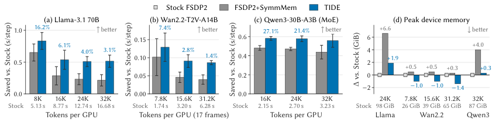
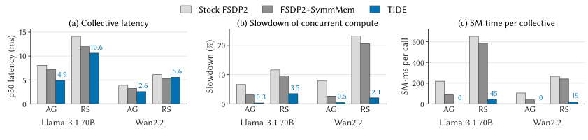

Contents · 9 sections
1What problem is it actually solving?2The big picture: which steps TIDE replaces3Why does a communication kernel slow a matrix multiply by 69%?4All-gather: parameters land at their final address5Reduce-scatter: two levels of addition, the last one done by NVSwitch6What do the results show?7Where I think it falls short8How a training team could try it9VerdictSHARE
TIDE (an FSDP2 communication implementation from the Kling team) builds the layout conversion that FSDP2 performs every step directly into all-gather and reduce-scatter. Stock FSDP2 stores parameters and gradients one tensor per parameter, but NCCL only sends and receives one flat buffer ordered by GPU, so every step copies data back and forth: all-gather results are copied into each parameter, and bf16 gradients are packed into one large fp32 buffer before the reduce-scatter. TIDE has communication read from where each parameter lives and write straight to where it must end up, with copy engines, RDMA and NVSwitch moving the data and no change to model code or compute kernels. Across three models, step time drops by up to 27.1% relative to stock FSDP2. In training a 70B model, those copies alone take 6.4% of step time. NCCL's communication kernels also keep holding SMs and can slow a matrix multiply that would otherwise finish in one wave by 69%; TIDE's all-gather uses no SMs, and its reduce-scatter uses only a few thread blocks that live for a fraction of a millisecond to do fp32 accumulation. Beyond raw communication speed, data layout and contention for compute decide training speed as well. Teams training large models with FSDP2 across machines should read it, and teams training MoE models most of all: with MoE every GPU sends and receives all experts' parameters while each token uses only a small part of them, so the copies and the SM contention weigh the most.
What problem is it actually solving?
The trouble is ordering, every time FSDP2 all-gathers parameters or reduce-scatters gradients. On the model side, every parameter is its own contiguous block of memory, which is exactly what compute kernels expect. On the NCCL side, inputs and outputs are one flat buffer: all of GPU 0's data first, then all of GPU 1's, and so on. The two orders differ, so FSDP2 has to copy between them.
A hand-checkable example (illustrative): a layer has 3 parameters whose per-GPU pieces are 2, 1 and 3 MB, with 4 GPUs, so each GPU's pieces total 6 MB. GPU 1's piece of the second parameter lands at 6×1+2=8 MB in the NCCL output. But the second parameter must be one contiguous block, so that piece belongs at 2×4+1×1=9 MB. The positions do not match, so another copy is needed.
| Same piece of data (illustrative) | Position in NCCL output | Position the parameter needs |
|---|---|---|
| GPU 1, second parameter | 8 MB | 9 MB |
| GPU 2, second parameter | 14 MB | 10 MB |
The backward side is worse. Gradients are separate bf16 tensors, the configurations the paper targets sum gradients in fp32, and NCCL's reduce-scatter only works on one buffer of a single type. So FSDP2 first slices, zero-pads and upcasts all gradients to fp32 and packs them into one large buffer, twice the size of the whole bf16 parameter group. Together, the forward copy-back and the backward packing take 0.33 s per step in Llama-3.1 70B training at 8K tokens per GPU, 6.4% of step time.
The second cost is less visible: NCCL's communication kernels occupy compute units themselves. It gets its own section below.
The big picture: which steps TIDE replaces
TIDE's core idea is to write "where the data must go" into the communication itself. Communication reads straight from where each parameter lives and writes straight to where it must end up, with no GPU-ordered flat buffer in between. Data movement goes to hardware that uses no compute units: copy engines, RDMA network cards between machines, and NVSwitch inside a machine, which can write data to several GPUs at once and can also add values inside the switch. Compute units are kept only for short-lived fp32 accumulation.
| Step | Stock FSDP2 | TIDE |
|---|---|---|
| Forward all-gather | NCCL receives into a flat buffer, then copies back into each parameter | Copy engines write through NVSwitch straight to each GPU's parameter location, RDMA across machines, no compute units |
| Backward reduce-scatter | Gradients packed into an fp32 flat buffer, NCCL holds compute units for the whole sum | A few thread blocks sum to fp32 inside each machine, only the summed result crosses machines, and NVSwitch does the last addition |
Below we take it apart: first why occupying compute units deserves its own fix, then how each collective works.
Why does a communication kernel slow a matrix multiply by 69%?
GPU kernels are placed on SMs in units of thread blocks. A high-throughput matrix multiply uses a whole SM's shared memory per thread block, and its thread blocks are scheduled in clusters of 4. A GPU can hold only a fixed number of clusters at once; the ones that do not fit wait for the next round, which the paper calls a wave.
The paper's example is a 256×8192×8192 matrix multiply, the shape of MoE expert layers and narrow projections when token counts are small. It has 32 clusters and the GPU holds at most 33, so it finishes in one wave. NCCL's default reduce-scatter (8 machines, 32 MiB output) uses 16 thread blocks, also in groups of 4, forming 4 clusters that take 4 positions: the 1 spare and 3 that should have gone to the matrix multiply. The matrix multiply is left with 29 positions, 32 clusters do not fit, and the 3 extra clusters, 12 thread blocks in all, wait for a second wave: the matrix multiply slows by 69%. The extra cost is not a few thread blocks' worth of time but a whole wave.
Simply giving NCCL fewer thread blocks does not work either. Capped at 4 thread blocks, the matrix multiply slows by only 2.7%, but the reduce-scatter itself stretches from 6.75 ms to 26.35 ms. TIDE's training configuration uses 16 thread blocks for the within-machine sums and 4 for the last step, adding the partial sums received from other machines into the output. They are scheduled as single blocks, not clusters, each lives only 0.2–0.4 ms, and none waits on the network on an SM. The matrix multiply slows by 2.9% and the reduce-scatter takes 6.96 ms. Two things matter: whether communication blocks form clusters that take the matrix multiply's slots, and how long they stay on SMs. TIDE moves the waiting for the network off the SMs.
Which side initiates the transfer matters too. The paper has the other 7 GPUs in a machine read from or write to GPU 0 while GPU 0 runs a memory-bandwidth-bound kernel: when the other GPUs pull data, that kernel slows by 46.7%; when they push data in, it slows by only 12.1%. So TIDE pushes rather than pulls wherever it can.
All-gather: parameters land at their final address
Inside a machine, each GPU issues one copy-engine operation that writes its piece through NVSwitch to that parameter's final address on all 8 GPUs at once, instead of sending it 7 separate times. When the parameter type matches the communication type, the parameter pieces are copied into the communication memory area only once, at the first forward pass, and the parameter shard itself is then pointed at that memory. The optimizer updates it there, so every later all-gather reads the latest parameters in place.
Across machines, GPUs split the work by number: GPU l uses only its own network-card line l and exchanges with GPU l on the other machines the pieces belonging to each machine's GPU l; arriving pieces are then written by copy engines through NVSwitch to the parameter location on all 8 local GPUs in one go. For the order of exchange between machines, TIDE does not pass pieces around a ring. It uses recursive doubling: in round d (counting from 0), machine n sends the first min(2^d, M−2^d) pieces it has collected to the machine numbered 2^d lower and receives as many from the machine numbered 2^d higher, with numbers taken modulo the machine count M. The count doubles in the early rounds; when the machine count is not a power of 2, the last round sends only the pieces still missing, so nothing arrives twice. M machines thus need only ⌈log₂M⌉ rounds. Eight machines need 3 rounds where a ring needs 7.
Many machines sending to one machine at the same time cause congestion on the RDMA network. TIDE starts the next round only after the receiver confirms the previous round has arrived. So that waiting for the confirmation does not waste time, each transfer is split into a small head and the remaining tail (8 MiB of heads in total by default); the receiver confirms once all heads arrive, and the tail is still in flight while the confirmation travels. The paper measures that without this pacing, the switches tell senders to pause 9 times as often during training, which shows the pacing cannot be skipped.
Reduce-scatter: two levels of addition, the last one done by NVSwitch
The backward side is harder because it has to add, and it must keep fp32 precision. The paper first rules out a seemingly simple approach: put gradients in memory every GPU can access and let NVSwitch add them directly. Stored in bf16, NVSwitch rounds each result back to bf16, so as machines are added small gradient contributions can be lost; stored in fp32, it needs a permanent buffer twice the size of the whole bf16 parameter group.
TIDE splits the addition into a within-machine level and a cross-machine level. At the first level, for each destination machine, each of the 8 local GPUs owns one small slice; the other 7 GPUs push their bf16 gradients for that slice to the owner with copy engines, and the owner sums the 8 copies into one fp32 copy with a few thread blocks. Each machine then sends one 4-byte fp32 partial sum per element instead of eight 2-byte values, a quarter of the cross-machine data.
The second level happens on the destination machine. Each GPU is connected only to its own network-card line, and data can only land on the same-numbered GPU on the other side. For NVSwitch to add several machines' partial sums in one go, the same slice from different machines must land on different GPUs at the same address. TIDE uses a Latin square as a seating chart: in every row and every column of the table, each source machine appears exactly once. The arrangement is set on the source side: for a given destination machine, each source machine gets a relative index c, equal to the destination's number minus the source's number, modulo the machine count, with the destination itself as 0, so the same source has a different c for each destination. On the source machine, GPU j handles slice (j+c) mod 4 (taking 4 GPUs as the example), and after the within-machine sum it sends the result over line j to GPU j on the destination machine. Hoot says

- four copies on one card, no single read-add
- same address on four cards: one NVSwitch read-add
- segment 0 lands on this card
- no segment 0 here
- How it works: each card can send only to the same-numbered card opposite. A source's relative index c = target index − source index, mod 4. Segment s from the machine with index c lands on card (s − c) mod 4: A gives (0 − 1) mod 4 = 3, B gives 2, C gives 1.
TIDE's contribution is handing the last addition step of cross-machine reduce-scatter to NVSwitch while keeping fp32 precision. The target is D; sources A, B and C have relative indices 1, 2 and 3, and D itself is 0. Left: no offset. Right: the Latin square offset by relative index. Source: left: illustrative counterexample; right: the hand calculation in the paper's Figure 6
A hand calculation with 4 GPUs (the paper's Figure 6): the destination machine is D, sources A, B and C have relative indices 1, 2 and 3, and D itself is 0. Seen from the destination, slice s from the machine with index c therefore lands on GPU (s−c) mod 4. For slice 0, D lands on GPU 0, A on GPU 3, B on GPU 2 and C on GPU 1, so the four copies sit on four different GPUs. One NVSwitch read-and-add on that address sums all four machines' partials. Each GPU on the destination machine ends up with different gradients, so inside each partial sum the slice is further split into one small block per destination GPU. On each GPU, the 4 thread blocks that handle the last step read-and-add only their own block and accumulate the result straight into the fp32 gradient shard that GPU finally holds. With more than 8 machines the sources are split into batches of at most 8, and two sets of inbox buffers alternate, so their size does not grow with the machine count.
When gradients can be freed also needs planning. TIDE separates "reading gradients" from "waiting on the network": once the within-machine sum is done, the gradients are no longer needed. In-Place mode reads gradients where they are, so the next layer's all-gather can be issued early. Slot-Reuse mode copies gradients into the all-gather slot that has just been vacated and frees the original gradient memory at once, at the cost of making the next all-gather wait until reading finishes.
What do the results show?
Experiments train three models on 8 machines with 64 GPUs: the dense Llama-3.1 70B, the MoE Qwen3-30B-A3B, and a 14B dense diffusion Transformer from the Wan2.2 video generation model. The baselines are stock FSDP2 (Stock below) and FSDP2 with PyTorch symmetric memory (SymmMem below), all with the same model, precision, optimizer and activation checkpointing.

| Model | Tokens per GPU | TIDE step-time reduction vs Stock |
|---|---|---|
| Llama-3.1 70B | 8K | 16.2% |
| Llama-3.1 70B | 32K | 3.1% |
| Wan2.2 | 7.8K | 7.4% |
| Wan2.2 | 31.2K | 1.4% |
| Qwen3-30B-A3B | 16K | 27.1% |
| Qwen3-30B-A3B | 32K | 17.3% |
The relative gain shrinks as tokens per GPU grow, but that is not TIDE getting weaker. On Llama from 16K to 32K, the absolute saving stays at 0.51–0.54 s per step, 1.9–2.4 times what SymmMem saves; the step itself just gets longer. The paper gives an estimate: the recoverable overhead as a share of step time is proportional to the total parameter volume and inversely proportional to the activated parameters per token times tokens per GPU. This means MoE suffers most, because every GPU gathers and reduces all experts' parameters while each token uses only a small fraction of them. On Qwen3, TIDE is also 4.3%–6.0% faster than SymmMem.
Where does the gain come from? Replacing only the all-gather recovers 50% of the total saving (Llama 24K), replacing only the reduce-scatter recovers 58%, and the two add up to 108%, which shows the two parts are largely independent and stack. On one GPU in a Llama 8K step, the SM time used by communication drops from Stock's 78 SM·s to 3.8 per step, and the share of the step with a communication kernel resident falls from 89% to 8%.

On memory, In-Place mode at Llama 24K peaks 4.7 GiB below SymmMem and 1.9 GiB above Stock; on Wan, Slot-Reuse peaks 1.0–1.4 GiB below even Stock. On correctness, training Qwen3-30B-A3B from scratch for 1,000 steps, taking a first Stock run as the reference and comparing 50-step moving-average loss over steps 500–1,000, TIDE differs by at most 0.73% and a second Stock run by at most 1.12%. This shows the difference TIDE introduces stays within normal run-to-run variation.
Where I think it falls short
First, the gain is small for dense models with long sequences. Llama at 32K tokens per GPU saves only 3.1%, and Wan at 31.2K saves only 1.4%; if you already train long-sequence dense models, this cost is small to begin with.
Second, the hardware and software bar is high. It needs NVSwitch that can add inside the switch, at most 8 GPUs per machine, one aligned network-card line per GPU, Hopper-class or newer GPUs (compute capability ≥ 9.0), PyTorch 2.13, and NCCL 2.31 or later, and CUDA graphs are not supported yet. FSDP2 communicates parameters in groups, each group doing its all-gather and reduce-scatter together. If a group holds more than 256 trainable parameters (each weight or bias tensor counts as one, whatever its size), or falls outside the conditions above, that group alone uses stock FSDP2 communication; the other groups still use TIDE. Experiments stop at 64 GPUs and do not test scales of hundreds or thousands of GPUs.
Third, the reduce-scatter on its own is not always fastest. In the paper's Table 8, with 2 machines and 32 MiB outputs, TIDE's median latency is 2.12 ms against SymmMem's 1.27 ms. It wins in training by removing the layout copies and by the overlap that comes from occupying fewer SMs, not because every collective is faster. The code is also only due for release upon publication.
How a training team could try it
A team doing generative recommendation or LLM post-training that trains with FSDP2 across machines could try it in this order:
- First use a profiler to see how much of a step goes to the two copy kernels split_with_sizes_copy and _chunk_cat, and what share of the step has a communication kernel resident. Only continue if the share is several percent or more.
- Apply the paper's estimate to your own model: the larger the total parameter volume, the fewer parameters each token activates, and the fewer tokens per GPU, the bigger the gain. Try MoE models first.
- Switch to the SymmMem path that PyTorch already has. It costs the least, recovers part of the all-gather gain, and confirms whether the cluster's NVSwitch and NCCL version meet the requirements.
- Once the code is out, run Stock twice and TIDE once under the same configuration, check whether the loss-curve gap stays within the gap between the two Stock runs, and then compare step time and peak memory.
Verdict
FSDP2's layout conversion belongs inside the communication, not in copies before and after it, and communication should be moved off the compute units.
| Dimension | Assessment |
|---|---|
| Problem importance | Medium-high. The copies and the contention for compute units happen every step, and they are a visible share in MoE and short-sequence training |
| Method novelty | High. Latin-square placement lets NVSwitch add several machines' fp32 partial sums in one go, a very concrete design |
| Experimental evidence | Fairly strong. Three models, a per-part breakdown of the gain and a loss comparison, but only up to 64 GPUs |
| Engineering cost | High. Depends on a specific hardware topology and a recent NCCL, and the code is not yet open |
| Worth trying? | For MoE or short-sequence multi-machine training, profile first and then evaluate; low priority for long-sequence dense models |
How did this read for you?
Hoot made a note. Thanks for the feedback.
One tap, no sign-in; tap again to undo. Only anonymous counts are kept, never who you are.
Discussion
Add experiment details, reproduction notes or a different take. Requires a GitHub sign-in.
Loading the discussion…